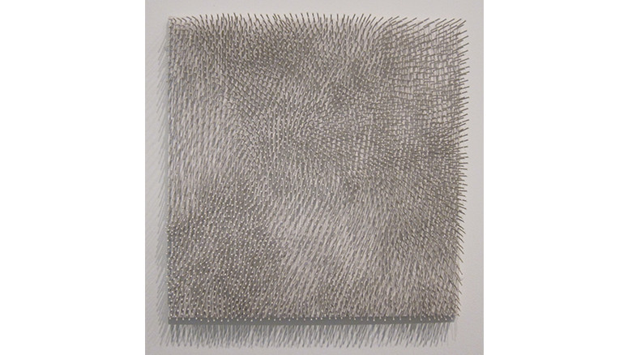

minimal

Günther Uecker
https://de.wikipedia.org/wiki/G%C3%BCnther_Uecker-どんな人
パネルに釘を打ち込んだ作品を多く作っているドイツ人アーティストです。規則的にまたは不規則的に釘を打ち込み、不思議な表情をもった作品を作り出します。
-解説
白いパネルに、白い釘を打ち込んだ作品です。白い画面では白い釘を打っても目立たないですが、その釘がつくる影によって、画面に不思議な表情が生まれます。釘もただまっすぐ打つのではなく、角度をすこし傾けたり、密集している部分と、離している部分をつくることで画面全体に動きを出しています。釘という「刺さる」性質とその影を上手に利用した作品です。
-好きなところ
細い立体物をいっぱい並べるだけでも、一本一本にに影があらわれ不規則で面白い画面の表情がつくることができるので、平面でつくったグラフィックとは一味ちがう質感をもった背景画面をつくることができるのではないでしょうか。